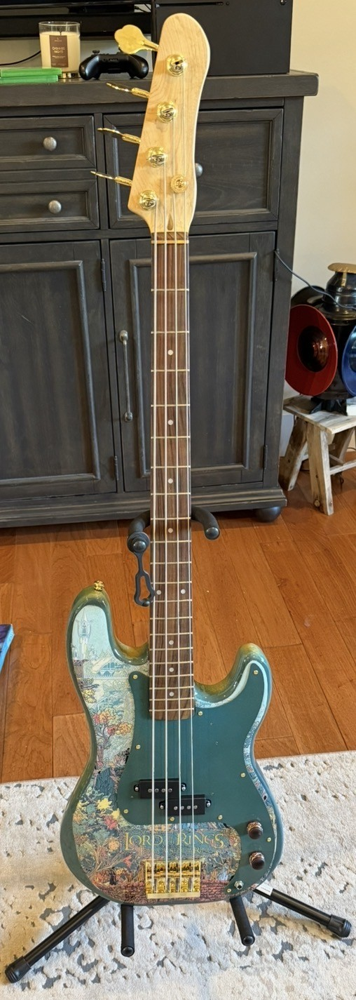
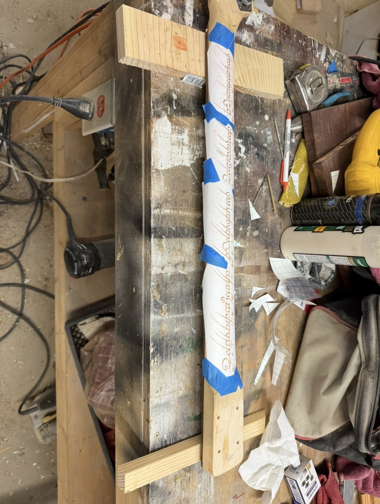
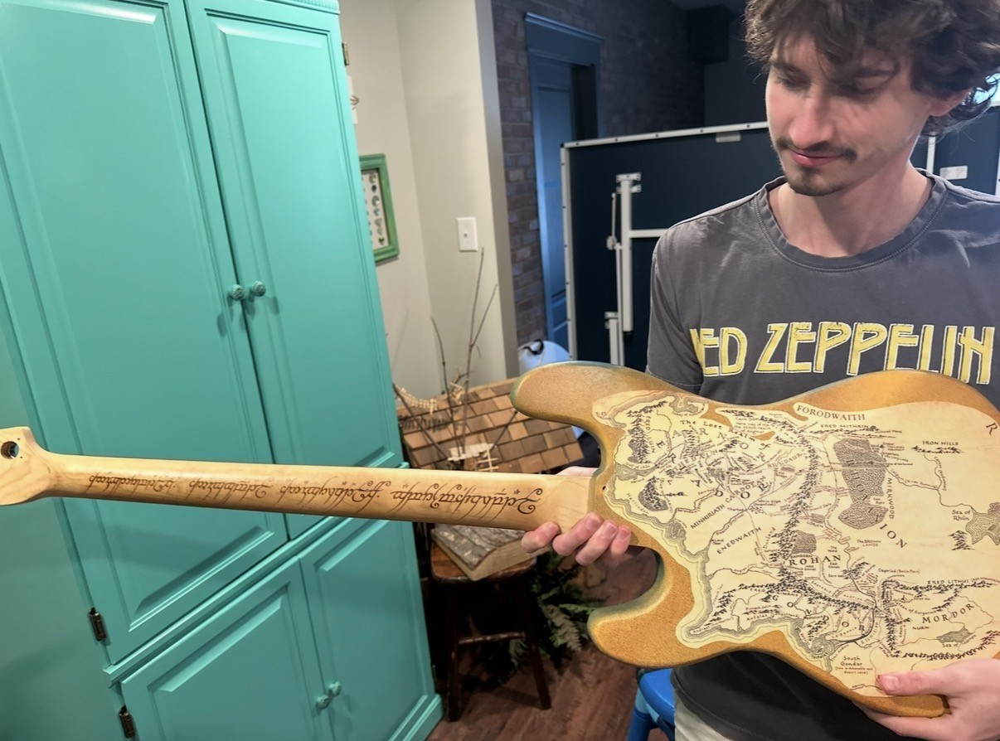

Refurbished Bass Guitar
The goal of this project is to restore an old low quality bass guitar to better understand how bass guitars work. I figured its not everyday that I have the opportunity to have complete control over how a bass guitar will look so I decided to go with a Lord of the Rings themed bass.
ROLE Designer and Manufacturer
DATE 2025
TOOLS Cricut, Woodworking, Heat Gun

The Vision
My main priority with this project was to learn how a bass guitar functions however that was going to happen naturally through the restorations and modifications. My vision for how this bass come out was a Lord of the Rings themed bass with a cool poster on the front and the map of middle earth on the back. I also had creative plans for the back of the neck.
Fixing the Bass
At the state that I got the bass, it did not work. I took it apart to diagnose the problem and pickups were not working which ended up being a wiring problem so I looked up the schematic of what the wire connections are supposed to be and rewired and soldered the pickup circuit. After rewiring the bass it worked as a normal bass would.
Decorating the Neck
For the neck I wanted the ring inscription to be burned onto the back. This process required multiple steps including resizing and formatting a picture of the inscription to fit on the back of the neck then upload to CriCut software to create a stencil. I then applied a chemical solution that when dried onto the wood, would make it burn easier. When the chemical solution was dried onto only to the stenciled design, I took a heat gun to burn the design onto the back of the neck.
The head of the bass also needed to cut and sanded and after that the whole neck was coated with a sealant.

Decorating the Body
The plans for the body was to have a decorative poster on the front and the map of middle earth on the back. To make the edges look good I spray painted a fading design to bridge the two posters then I glued the posters to the body. To finsih the I added a layer of epoxy to give it a shiny finsih. Epoxy needs to be stored and applied in appropriate temperatures to ensure that it continues to function as intended.

Final Result and Lessons Learned
This project was a success because I better understand how a bass works afterwards. I got to work on the inside electronics and pickups as well as requiring mechanical adjustments for the neck and body. On top of just learning about how the instrument works I also grew familiar with 2D design software and using precision machines to accomplish my goal.